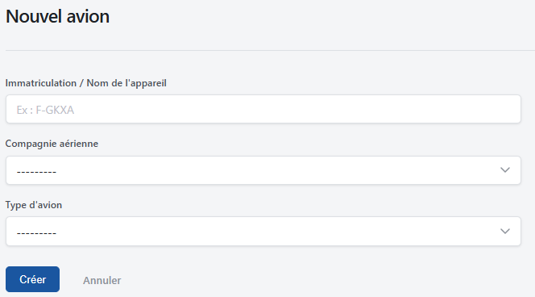
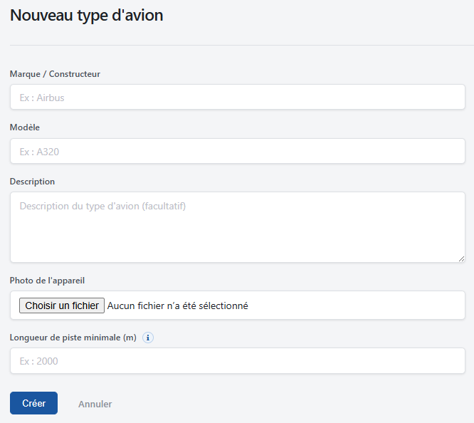
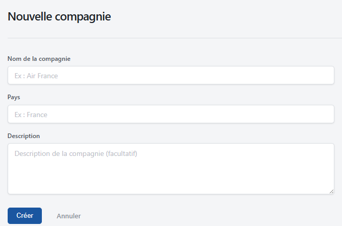
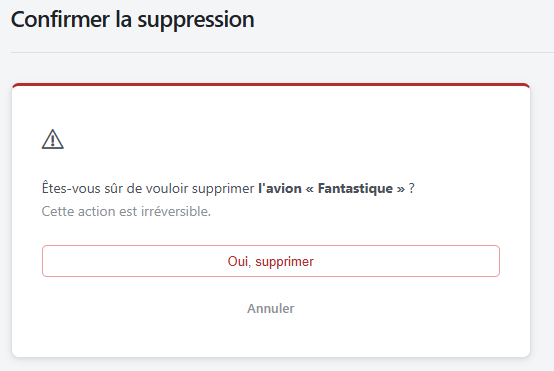
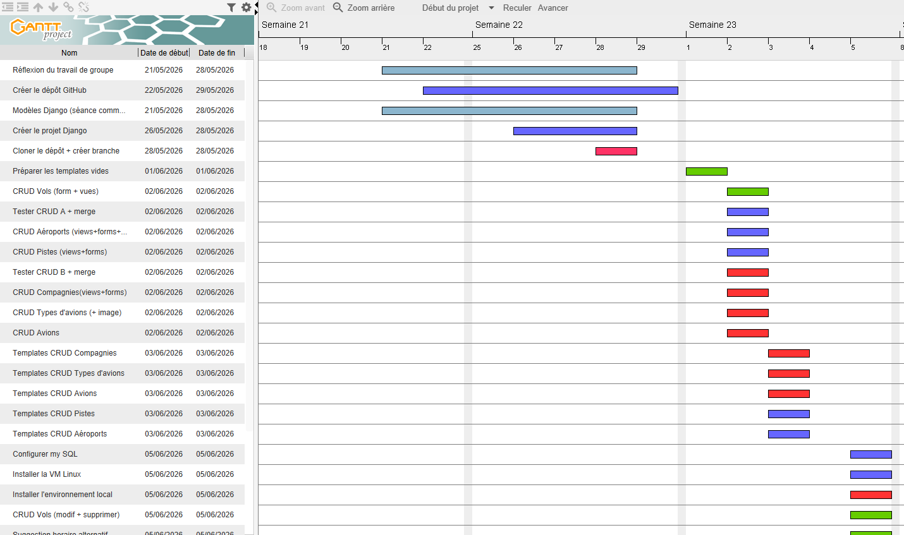
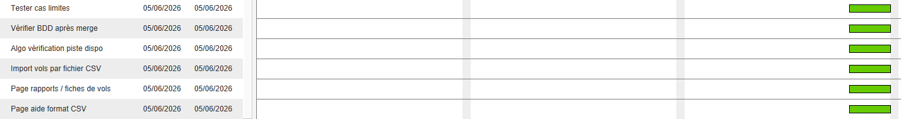

Projet intégratif
Objectif
Dans le cadre d'un projet collaboratif, l'objectif était de concevoir et déployer une solution complète d'accès et de manipulation de données au travers d'un site web. L'application développée est un Gestionnaire de Trafic Aérien permettant de créer des aéroports, des pistes, des vols, des avions, des types d'avions et des compagnies. L'ensemble des services devait être déployé sur une machine virtuelle Linux configurée par nos soins : application Django servie par Gunicorn, reverse proxy Nginx et base de données MySQL.
Réalisations techniques
- Le projet global a consisté à concevoir l'architecture de l'application via le framework Django et à modéliser le schéma relationnel d'une base de données MySQL hébergée sous Linux.
- En tant que co-développeuse, j'ai pris en charge une partie de l'organisation du projet et plusieurs CRUDs (avions, compagnies, vols, pistes, aéroports et types d'avions)
Compétences R&T mobilisées
- AC0314 — Connaître l'architecture et les technologies d'un site Web.
- AC0315 — Choisir les mécanismes de gestion de données adaptés au développement de l'outil.
- AC0316 — S'intégrer dans un environnement propice au développement et au travail collaboratif.
- AC0312 — Lire, exécuter, corriger et modifier un programme.
- J'ai réalisé le Diagramme de Gantt : il a permis à mon groupe de s'organiser au niveau de la repartition des tâches et à nous projeter pour estimer à quel moment nous ferions telle tâches
- J'ai réalisé le CRUD avions : il permet de renseigner l'immatriculation / nom de l'appareil (ex : F-GKXA), la compagnie aérienne (il faut sélectionner une compagnie aérienne existant dans le menu déroulant), le type d'avion (il faut sélectionner un type d'avion existant dans le menu déroulant)
- Le CRUD types d'avions : il permet de renseigner la marque / constructeur (ex : Airbus), le modèle (ex : A320), une description (facultative), une photo de l'appareil à partir du gestionnaire de fichier, ainsi qu'une longueur de piste minimale (ex : 2 000 mètres)
- Le CRUD compagnies : il permet de renseigner le nom de la compagnie ( ex : Air France), le pays (ex : France), ainsi qu'une description (facultative)
- Un template Django confirm_delete.html pour les avions, les types d'avions ainsi que pour les compagnies qui sert à afficher une page de confirmation avant la suppression d'un élément. Il hérite du template principal base.html et affiche un message d'avertissement demandant à l'utilisateur de confirmer la suppression d'un objet dont le nom est stocké dans {{ titre_objet }}. Il propose deux actions : confirmer la suppression via un formulaire sécurisé par un token CSRF, ou annuler et revenir à la page précédente grâce au lien {{ retour_url }}. L'objectif est d'éviter les suppressions accidentelles en demandant une validation explicite de l'utilisateur.
Mes tâches




Technologies
Preuve
Site Web Gestion Trafic Aérien

Diagramme de Gantt


Résumé en anglais
This project focused on designing and deploying a complete web application for air trafic management using Django. The goal was to create a tool able to manage airports, aircrafts, airlines, flights, runways and aircraft types through a structured MySQL database. I contributed to the project organization (Gantt), the aircrafts, aircraft types and airlines CRUD features. The application was also deployed by one of my mate on a Linux virtual machine with MySQL, Gunicorn and Nginx, which helped me understand how a Django application connects to a database and how it can be prepared for a server environment. This SAE strengthened my skills in web development, database design, collaborative work and basic application deployment.